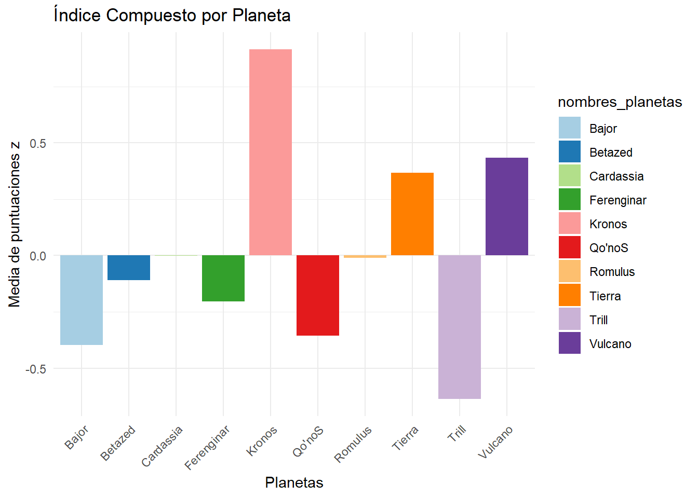

Capítulo 7 Ponderación y Agregación
En este manual, presentamos tres enfoques distintos para ponderar y combinar variables en un índice compuesto.
El primer enfoque se basa en la inclusión de todas las variables y la utilización de puntuaciones z, que estandariza las variables permitiendo que cada una contribuya equitativamente al índice compuesto.
El segundo método se evalúa la influencia de cada variable en las principales dos dimensiones del FAMD. Utilizando la función fviz_contrib, destacamos las variables que más contribuyen a cada dimensión, lo que nos permite seleccionar aquellas que son más significativas para nuestro índice compuesto.
Finalmente, en el tercer enfoque, no se aplica una ponderación posterior ni una selección de variables. En lugar de ello, utilizamos directamente las dimensiones resultantes del famd como el índice en sí. Las dos primeras dimensiones, Dim1 y Dim2, capturan la mayor parte de la variabilidad y las relaciones intrínsecas en los datos, y se presentan como las coordenadas de nuestras observaciones en este espacio reducido.
7.1 Enfoque 1: Inclusión de todas las Variables
Para elaborar un índice compuesto que integre todas las variables del estudio, se procede con la normalización de los datos mediante la conversión a puntajes z. A continuación, se presenta el proceso de cálculo del índice compuesto basado en estos datos normalizados previamente en el capítulo 4.
El siguiente código R asume que la normalización de los datos ya ha sido realizada previamente. El código crea un nuevo data.frame llamado puntuaciones_1_df que combina los datos normalizados con los nombres de los planetas.
# Data frame con los datos normalizados previamente
nombres_planetas <- datos_IST_imputados_3[, "Planeta"]
puntuaciones_1_df <- as.data.frame(datos_normalizados, nombres_planetas)
puntuaciones_1_df## Libertad_asociacion Elecciones_limpias Libertad_expresion
## Vulcano -0.9983742 1.2570692 1.04480400
## Tierra 0.8642586 -0.2031057 0.43948381
## Romulus -0.5467864 0.4471923 0.06708157
## Kronos 1.2165742 0.1428686 1.38201505
## Cardassia 0.8639992 -1.2193121 0.34917313
## Ferenginar -1.8986567 1.0917418 0.19784052
## Bajor -0.1036457 -0.8041315 -0.28178906
## Betazed 0.9890750 -1.3958243 0.07525119
## Trill -0.0168633 -0.5668114 -1.32423046
## Qo'noS -0.3695807 1.2503130 -1.94962975En la siguiente etapa, se calcula la media de las puntuaciones z para sintetizar las características distintivas de cada planeta según las variables evaluadas, utilizando la función rowMeans.
# Media
media_1 <- rowMeans(puntuaciones_1_df)
indice_compuesto_1 <- data.frame(nombres_planetas, media_1)
indice_compuesto_1 <- indice_compuesto_1[order(-indice_compuesto_1$media_1), ]
#Índice compuesto
indice_compuesto_1## nombres_planetas media_1
## Kronos Kronos 0.913819295
## Vulcano Vulcano 0.434499665
## Tierra Tierra 0.366878911
## Cardassia Cardassia -0.002046577
## Romulus Romulus -0.010837515
## Betazed Betazed -0.110499371
## Ferenginar Ferenginar -0.203024772
## Qo'noS Qo'noS -0.356299174
## Bajor Bajor -0.396522076
## Trill Trill -0.635968387El gráfico Índice Compuesto por Planeta muestra la media de las puntuaciones z para cada planeta, lo que permite una comparación rápida de sus características basadas en las variables estudiadas.
ggplot(indice_compuesto_1, aes(x = nombres_planetas, y = media_1, fill = nombres_planetas)) +
geom_bar(stat = "identity") +
theme_minimal() +
theme(axis.text.x = element_text(angle = 45, hjust = 1)) +
labs(x = "Planetas", y = "Media de puntuaciones z", title = "Índice Compuesto por Planeta") +
scale_fill_brewer(palette = "Paired")
7.2 Enfoque 2: Selección de las variables más significativas identificadas en el FAMD
incompleto
Los comandos fviz_contrib(famd, choice = "var", axes = 1) y fviz_contrib(famd, choice = "var", axes = 2), utilizados en el capítulo 3, facilitaron la visualización de las contribuciones de las variables a las dos primeras dimensiones del análisis FAMD. Esto ayudó a identificar qué variables tienen más influencia en cada dimensión: Libertad_asociacion y Libertad_expresion en la primera, y Sufragio en la segunda.
Calcule la media de las puntuaciones normalizadas para cada observación y visualice los resultados, repitiendo los procedimientos demostrados anteriormente.